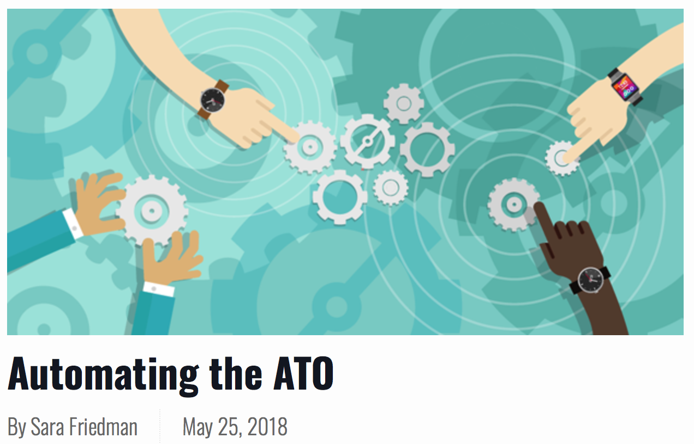

May 25, 2018
GovReady found the biggest problems came from the “sheer amount of documentation” that agencies must provide in their system security plans to get an authority to operate. After a series of experiments to determine how agencies created their SSPs, GovReady worked with developers to create component-centric guidance and build apps that map system components to compliance controls and include compliance documentation. When users select apps to build their systems from the GovReady-Q Compliance Server, their SSP automatically populates.